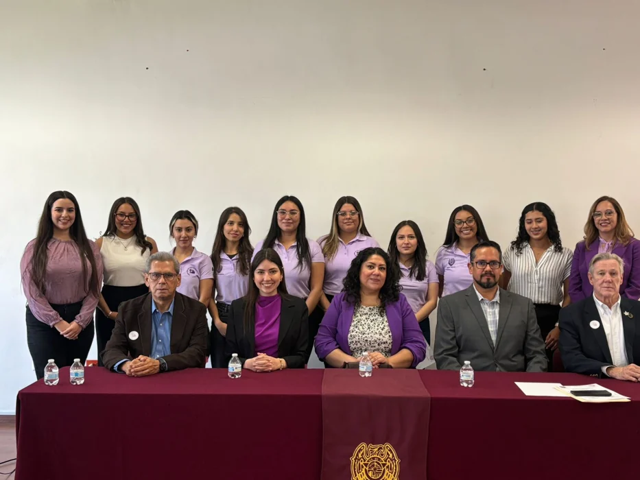

01 / DESDE LAS UNIVERSIDADES
Unidades ANMUC
Una red estudiantil que fortalece el liderazgo, las redes de apoyo y la capacidad de impulsar la igualdad de género en las universidades.
Conocer el programa
Dirigido a estudiantes de ingeniería civil, arquitectura y carreras afines. El modelo contempla formación, proyectos estudiantiles y colaboración entre universidades.
Solicitar información ↗